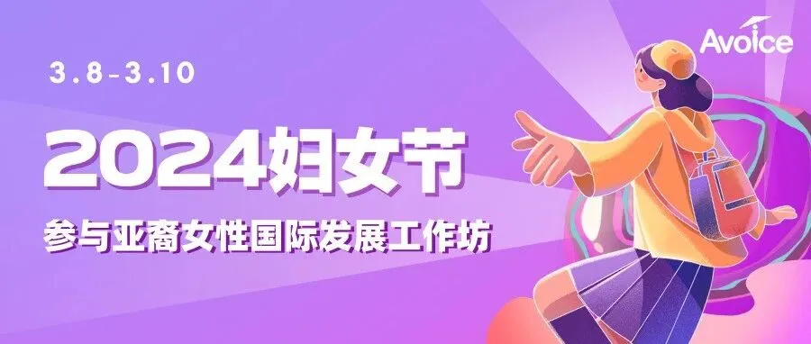
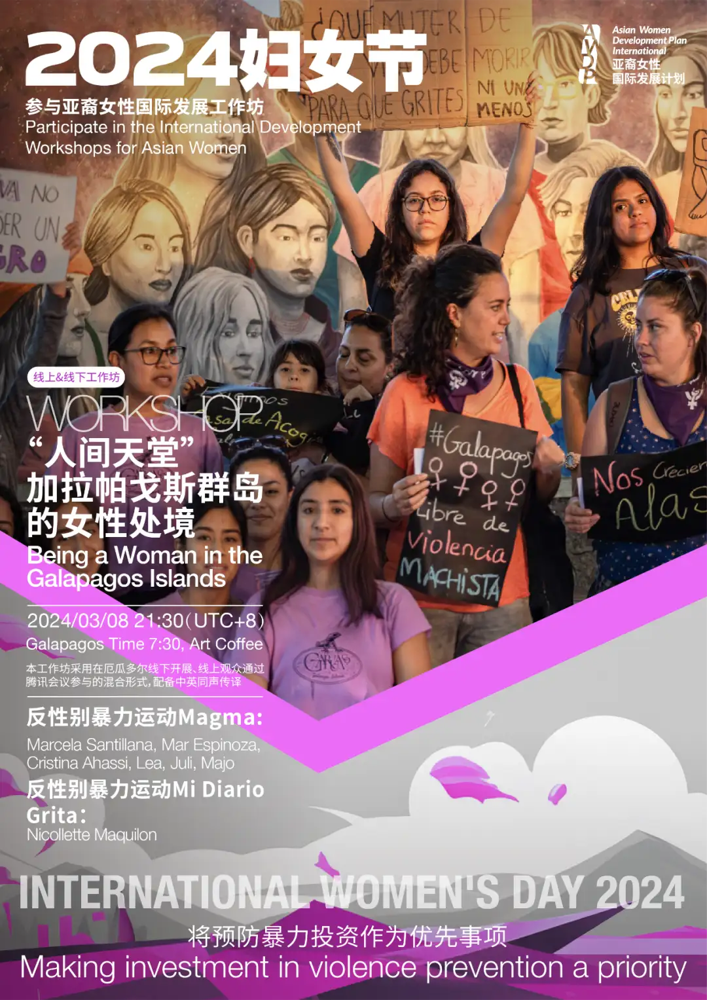

联合国2024年国际妇女节的主题是“投资于妇女：加速进步”。到2030年，促进性别平等措施的年度赤字将高达3600亿美元，推动性别平等融资刻不容缓。
在联合国2023年制止暴力侵害妇女行为国际日“16日行动”期间，我们举办了5场线上工作坊，与超过300名观众讨论了“性别视角下的职业病”等议题；而2024年妇女节主题与2023年制止暴力侵害妇女行为国际日的主题一脉相承，都是“通过提供充足资金，消除性别暴力”。如果不大力投资解决暴力侵害妇女和女童行为、扩大预防方案并实施有效政策，各国将无法在2030年之前消除性别暴力。
今年，AWDPI亚裔女性国际发展计划将在国际妇女节期间带来横跨中国、德国与厄瓜多尔的4场工作坊，与各国关注性别议题的人们共同表达对性别暴力幸存者的支持。
#本期工作坊

厄瓜多尔的加拉帕戈斯群岛被中国游客称作“人间天堂”。厄瓜多尔的法律保护性别平等，特别预防针对女性的暴力，规定各种性别拥有平等的接受教育和工作的权利。然而，就像其它社会一样，文化和地区性差异阻碍这些权利得到落实。因此，我们将讨论加拉帕戈斯群岛的女性所具体面临的性别挑战。我们还会着眼残障女性在加拉帕戈斯面临的歧视和孤立：当残疾人法难以在这片群岛落实，我们如何让社会看见残障女性，推动建设包容的系统性支持？此外，我们的嘉宾也包括本地青少年和性别暴力幸存者，以展现更多元、更真实的拉美女性之声。
议题一览
加拉帕戈斯群岛的女性权益
残障，歧视与孤立
加拉帕戈斯群岛的青少年处境
厄瓜多尔司法系统中的幸存者
反性别暴力运动Magma & Mi Diario Grita嘉宾一览
>> 向右滑动查看所有嘉宾（排序不分先后）
#如何参与
会议号：
#腾讯会议：413-798-865
活动时间：
北京时间 3月8日（星期五）21:30
#活动社群

撰文 ｜李思齐
排版｜游舸
设计｜Kylan